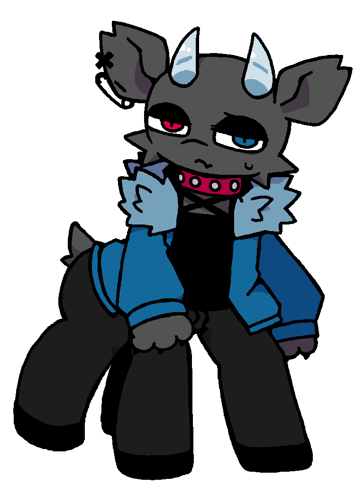

チーム : イミュラ [リーダー]
内気で臆病な「ロー人格」と高圧的で自信家な「ハイ人格」の二つの人格を持つ。普段はロー人格が表に出ているが、強いストレスを受けるとハイ人格に交代する。人付き合いが苦手なのにハイ人格のせいでリーダーになってしまい、毎日胃を痛めながら働いている。
【性別】男性
【一人称】俺 (ロー) / 俺様 (ハイ)
【身長】173cm
【好きなもの】自室 (ロー) / 冷たいもの (ハイ)
【苦手なもの】会話 (ロー) / 煙草 (ハイ)